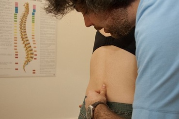

Metodo Dorn
Il
metodo Dorn è una tecnica manuale apparentemente simile alla chiroprassi che nella sua applicazione si rivela esserne l'opposto. Infatti, se la chiroprassi è una tecnica manipolativa, dunque attiva da parte del terapeuta, la terapia secondo
Dorn è passiva e l'effetto desiderato viene raggiunto con la collaborazione attiva del paziente: il terapeuta blocca con la pressione del pollice la vertebra causante i problemi, mentre il paziente bilancia le braccia o le gambe, nel caso di disturbi della parte toracica rispettivamente lombare della schiena. Grazie al bilanciamento la colonna vertebrale entra in torsione sul suo asse, permettendo così alle vertebre vicine a quella bloccata dal pollice del terapista di recuperarne la posizione fisiologica. Se si tiene presente che da ogni vertebra escono un paio di nervi, responsabili di innervare tessuti ed organi, è facile capire che l'efficacia dell'applicazione non si limita ai semplici problemi di schiena, ma può estendersi a tutto il corpo.

© Julo Indemini